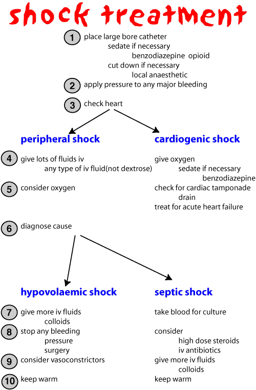

Shock is a state of generalised failure of perfusion of tissues. This is the end stage of most diseases although it is sometimes classified by the causative factor eg endotoxic shock, cardiogenic shock. Initially the body copes by directing most of the cardiac output to the vital organs and drawing water into the cirulation from the interstitial and intracellular fluid compartments but the condition may progress to the point where the compensatory mechanisms are inappropriate and result in positive feedback.
Every body system is affected by shock. Reduced blood flow to the tissues means that anaerobic respiration takes place and lactic acid builds up. The arterioles of non - essential tissues are vasoconstricted by sympathetic outflow and adrenaline but the acidic conditions will eventually cause vasodilatation releasing hydrogen ions into the circulation and reducing cardiac output and thus arterial blood pressure.
The first priority in most types of shock is to treat the hypovolaemia with fluids (almost any fluid will do to start with). The acidosis can then be corrected with bicarbonate and the cause of the shock treated. Treatment of cardiogenic shock is different - see diagram.
A huge number of drugs have been advocated for use in shock but there is no convincing evidence that any of them have any useful effect. Corticosteroids in high doses are usually given in the hope that they will do something despite the fact that they have only been shown to improve the outcome if given before shock develops.
